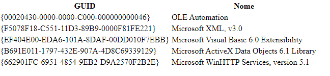
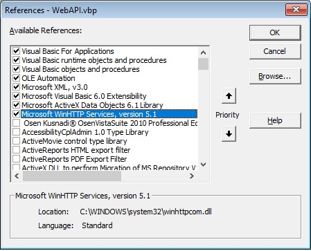

Desafio VB6 - Criar uma aplicação para consumir os dados de uma webapi e armazenar os dados no banco de dados.
O projeto WebAPI foi desenvolvido baseado nas especificações existentes no arquivo "MUTANT - Desafio DEV - VB6.pdf"
Descrição das pastas:
Para invocar a operação da API requisitada é importante que o computador esteja com acesso à Internet e sem bloqueio por parte de Firewall ou Anti-vírus.
A URL que será requisitada é:
Para executar o projeto é necessário que configure um acesso ao Banco De dados MYSQL utilizando um arquivo INI: bd.ini
Neste arquivo deverá constar:
[BancoDeDados]
Driver=MySQL ODBC 5.3 ANSI Driver
Server=127.0.0.1
Database=mutant
User=seu_usuario_aqui
Password=sua_senha_aqui
Todas as principais operações realizadas no sistema geram um registro no arquivo de texto existente na mesma pasta onde o arquivo WebApi.exe for executado.
O LOG será armazenado no arquivo: WebAPI.log


Fabrício A. Diniz.
031 991378167